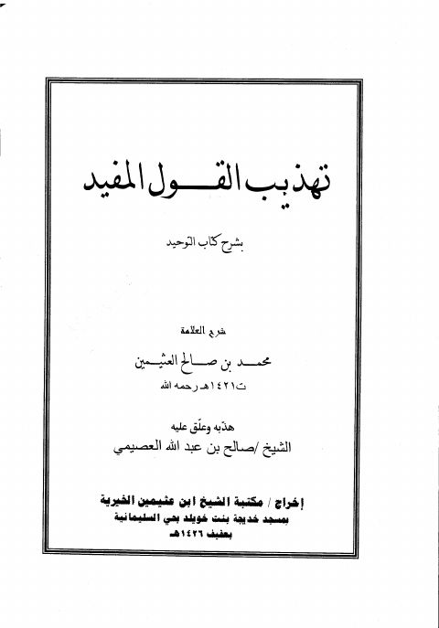
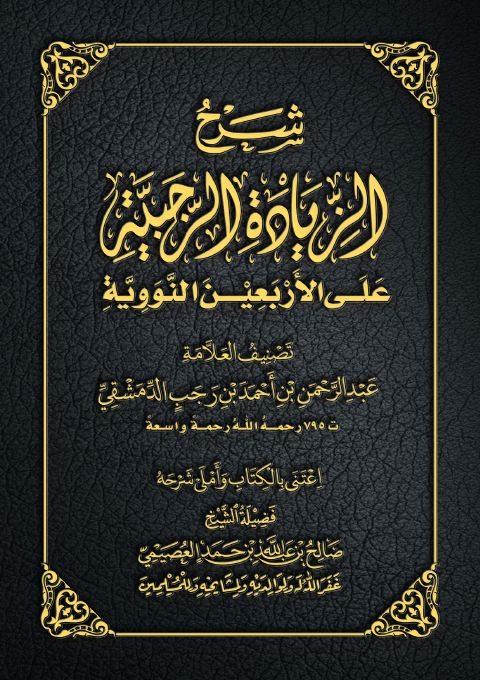

صالح بن عبد الله العصيمي
Author
Resources

تهذيب القول المفيد بشرح كتاب التوحيد تهذيب القول المفيد بشرح كتاب التوحيد محمد بن صالح العثيمين شرح الأربعين في مباني الإسلام وقواعد الأحكام المشهورة بالأربعين النووية- ملون
شرح الأربعين في مباني الإسلام وقواعد الأحكام المشهورة بالأربعين النووية- ملون
يحيى بن شرف النووي • صالح بن عبد الله العصيمي
شرح الأربعين في مباني الإسلام وقواعد الأحكام المشهورة بالأربعين النووية- ملون
شرح الأربعين في مباني الإسلام وقواعد الأحكام المشهورة بالأربعين النووية- ملون
يحيى بن شرف النووي • صالح بن عبد الله العصيمي

شرح الزيادة الرجبية على الأربعين النووية- ملون شرح الزيادة الرجبية على الأربعين النووية- ملون عبد الرحمن البغدادي بن رجب الحنبلي